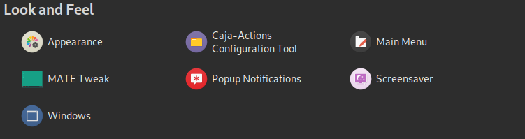

Linux, Bing…
Have you ever tried to download wallpapers from www.bing.com? Have you ever dreamed of a fantastic background but feel bored with download wallpapers by hands!
It’s a program written by C, it will automatically download and set wallpaper for you on Linux!
How does it works
It will download a XML file contains the API of www.bing.com, and then, I parse the file to obtain the full URL-path of the daily wallpaper. Finally, the wallpaper will be download and set as the background.
Details
Development environment:
Linux 5.7.0 amd64 x86_64
MATE 1.24.0
gcc version 9.3.0 (Debian 9.3.0-15)
curl 7.72.0 (x86_64-pc-linux-gnu)
libxml2
vim
So, how Linux download files with C? There’s no
URLDownloadToFile(), but we have a stronger tool – curl. After installing the libcurl package for C, we can use it to download the files.Install libcurl:
1
2
3sudo apt-get update
sudo apt-get install curl
sudo apt-get install libcurl4-openssl-devDownload with curl:
1
2
3
4
5
6
7
8
9
10
11
12
13
14
15
16
17/*
*#include <curl/curl.h>
*remember this!!!
*/
curlXml = curl_easy_init();
if (curlXml)
{
fpXml = fopen(xmlName, "wb");
curl_easy_setopt(curlXml, CURLOPT_URL, xml_url);
curl_easy_setopt(curlXml, CURLOPT_WRITEFUNCTION, write_data);
curl_easy_setopt(curlXml, CURLOPT_WRITEDATA, fpXml);
curl_easy_setopt (curlXml, CURLOPT_NOPROGRESS, 0);
resXml = curl_easy_perform(curlXml);
curl_easy_cleanup(curlXml);
fclose(fpXml);
} After it, another big problem, how to parse the XML? I tried
tinyxml, but such foolish thing even can hardly be installed on my lovely Linux! Then I find another easier way,libxml. With the help of APT, I easily installedlibxml, next I learned how to use it.Install libxml:
1
2sudo apt-get install libxml2
sudo apt-get install libxml2-devHere’s the example:
1
2
3
4
5
6
7
8
9
10
11
12
13
14
15
16
17
18
19
20
21
22
23
24
25
26
27
28
29
30
31
32
33
34
35
36
37
38
39
40
41
42
43
44
45
46
47
48
49
50
51
52/*
*#include <libxml/tree.h>
*#include <libxml/parser.h>
*remember this!!!
*/
xmlDocPtr pdoc = NULL;
xmlNodePtr proot = NULL;
xmlNodePtr pcur = NULL;
xmlKeepBlanksDefault(0); //Blanks may be parse as a node
pdoc = xmlReadFile(xmlName, "UTF-8", XML_PARSE_RECOVER);
if (pdoc == NULL)
{
printf(RED"ERROR:cannot open xml!!!\n");
exit(1);
}
proot = xmlDocGetRootElement(pdoc);
if(proot == NULL)
{
printf(RED"ERROR: Xml is empty!!!\n");
exit(1);
}
pcur = proot -> xmlChildrenNode;
while (pcur != NULL)
{
if (!xmlStrcmp(pcur->name, BAD_CAST("image")))
{
xmlNodePtr nptr=pcur->xmlChildrenNode;
while (pcur != NULL)
{
if (!xmlStrcmp(nptr->name, BAD_CAST("url")))
{
urlPart = XML_GET_CONTENT(nptr->xmlChildrenNode);
printf("URL part: %s", urlPart);
break;
}
nptr = nptr -> next;
}
}
pcur = pcur -> next;
}
xmlFreeDoc(pdoc);
xmlCleanupParser();
xmlMemoryDump();
printf("<Parse Done!!!>\n");
curlagain!!! The wallpaper successfully downloaded!!!Finally, how to set wallpapers…

I promise, I won’t let you set backgrounds like that, you won’t need to open your control center - Look and Feel - Appearance. We use
gsettings.1
gsettings set org.mate.background picture-filename picUri
Gnome 3 is supported too:
1
gsettings set org.gnome.desktop.background picture-uri picUri
It support:
- Gnome 3 test on latest Ubuntu (ubuntu-20.04.1-desktop-amd64)
- MATE test on Debian 10
- Xfce isn’t supported now
- You can just store the wallpaper, if you don’t want to change your backgrounds
Source code
- You can find the source code on my Github.
- —
Star & Fork me— - Give me advice: ccooperr2005@gmail.com
- Donate: : )
Compile & Build the code
1
2
3
4git clone https://github.com/theodorecooper/Linux-Bing-Backgrounds-Getter.git
cd Linux-Bing-Backgrounds-Getter
make
./bingbg